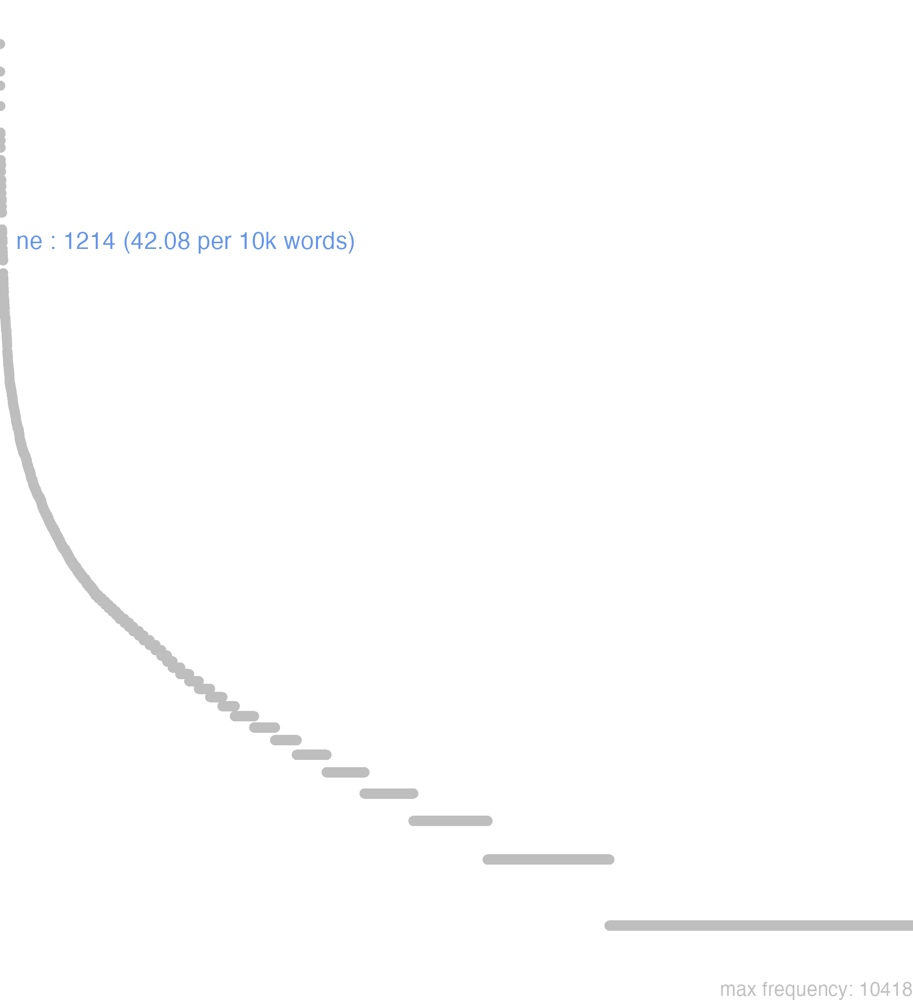

105 ne
105.0.0.1 bases lexicais
id: http://lila-erc.eu/data/id/lemma/113491
classe: conjunção subordinativa
paradigma: indeclinável
outras grafias:
variantes do lema:
no data
nē
no data
105.0.0.2 dicionários tradicionais
nē
adv. e conj. negativa. II. Conj.
adv. e conj. negativa. II. Conj.
1 Para que não Cés. B. Gal. 2, 5, 2.
2 Que não Cíe. Of. 1, 140: Plaut. Men. 612.
3 Que com verbos que indicam receio ou proibição Cíc. Leg. 1, 12; Cíc. Verr. 5. 5.
no data
Ne
2 Cic. para que não
Ne
1 que, ou que naõ, ou para que naõ
no data
105.0.0.3 dados de corpus
![This chart plots collocate by scoreSUBST, for the headword ne here are all the values plotted: collocate: que; scoreSUBST: 0. collocate: uereor; scoreSUBST: 0. collocate: quis; scoreSUBST: 0. collocate: sed; scoreSUBST: 0. collocate: uideo; scoreSUBST: 0. collocate: tu; scoreSUBST: 0. collocate: timeo; scoreSUBST: 0. collocate: ego; scoreSUBST: 0. collocate: possum; scoreSUBST: 0. collocate: ille; scoreSUBST: 0. collocate: igitur; scoreSUBST: 0. collocate: tantus; scoreSUBST: 0. collocate: iste; scoreSUBST: 0. collocate: uos; scoreSUBST: 0. collocate: an; scoreSUBST: 0. collocate: omnino; scoreSUBST: 0. collocate: fors; scoreSUBST: 0. collocate: existimo; scoreSUBST: 0. collocate: metuo; scoreSUBST: 0. collocate: accido; scoreSUBST: 0. collocate: patior; scoreSUBST: 0. collocate: paruus; scoreSUBST: 0. collocate: solus; scoreSUBST: 0. collocate: idcirco; scoreSUBST: 0. collocate: adeo; scoreSUBST: 0. collocate: ignoro; scoreSUBST: 0. collocate: suspicor; scoreSUBST: 0. collocate: caueo; scoreSUBST: 0. collocate: ue; scoreSUBST: 0. collocate: impedio; scoreSUBST: 0. collocate: nuntio; scoreSUBST: 0. collocate: laboro; scoreSUBST: 0. collocate: prohibeo; scoreSUBST: 0. collocate: censeo; scoreSUBST: 0. collocate: commoueo; scoreSUBST: 0. collocate: impero; scoreSUBST: 0](./Media/wordcloud__xx110-101xx__BY_collocate_scoreSUBST.webp)
![This chart plots collocate by scoreADJ, for the headword ne here are all the values plotted: collocate: que; scoreADJ: 0. collocate: uereor; scoreADJ: 0. collocate: quis; scoreADJ: 0. collocate: sed; scoreADJ: 0. collocate: uideo; scoreADJ: 0. collocate: tu; scoreADJ: 0. collocate: timeo; scoreADJ: 0. collocate: ego; scoreADJ: 0. collocate: possum; scoreADJ: 0. collocate: ille; scoreADJ: 0. collocate: igitur; scoreADJ: 0. collocate: tantus; scoreADJ: 0. collocate: iste; scoreADJ: 0. collocate: uos; scoreADJ: 0. collocate: an; scoreADJ: 0. collocate: omnino; scoreADJ: 0. collocate: fors; scoreADJ: 0. collocate: existimo; scoreADJ: 0. collocate: metuo; scoreADJ: 0. collocate: accido; scoreADJ: 0. collocate: patior; scoreADJ: 0. collocate: paruus; scoreADJ: 2. collocate: solus; scoreADJ: 0. collocate: idcirco; scoreADJ: 0. collocate: adeo; scoreADJ: 0. collocate: ignoro; scoreADJ: 0. collocate: suspicor; scoreADJ: 0. collocate: caueo; scoreADJ: 0. collocate: ue; scoreADJ: 0. collocate: impedio; scoreADJ: 0. collocate: nuntio; scoreADJ: 0. collocate: laboro; scoreADJ: 0. collocate: prohibeo; scoreADJ: 0. collocate: censeo; scoreADJ: 0. collocate: commoueo; scoreADJ: 0. collocate: impero; scoreADJ: 0](./Media/wordcloud__xx110-101xx__BY_collocate_scoreADJ.webp)
![This chart plots collocate by scoreVERBO, for the headword ne here are all the values plotted: collocate: que; scoreVERBO: 0. collocate: uereor; scoreVERBO: 5. collocate: quis; scoreVERBO: 0. collocate: sed; scoreVERBO: 0. collocate: uideo; scoreVERBO: 2. collocate: tu; scoreVERBO: 0. collocate: timeo; scoreVERBO: 2. collocate: ego; scoreVERBO: 0. collocate: possum; scoreVERBO: 2. collocate: ille; scoreVERBO: 0. collocate: igitur; scoreVERBO: 0. collocate: tantus; scoreVERBO: 0. collocate: iste; scoreVERBO: 0. collocate: uos; scoreVERBO: 0. collocate: an; scoreVERBO: 0. collocate: omnino; scoreVERBO: 0. collocate: fors; scoreVERBO: 0. collocate: existimo; scoreVERBO: 2. collocate: metuo; scoreVERBO: 2. collocate: accido; scoreVERBO: 2. collocate: patior; scoreVERBO: 2. collocate: paruus; scoreVERBO: 0. collocate: solus; scoreVERBO: 0. collocate: idcirco; scoreVERBO: 0. collocate: adeo; scoreVERBO: 0. collocate: ignoro; scoreVERBO: 2. collocate: suspicor; scoreVERBO: 2. collocate: caueo; scoreVERBO: 2. collocate: ue; scoreVERBO: 0. collocate: impedio; scoreVERBO: 2. collocate: nuntio; scoreVERBO: 2. collocate: laboro; scoreVERBO: 2. collocate: prohibeo; scoreVERBO: 2. collocate: censeo; scoreVERBO: 2. collocate: commoueo; scoreVERBO: 2. collocate: impero; scoreVERBO: 1](./Media/wordcloud__xx110-101xx__BY_collocate_scoreVERBO.webp)
![This chart plots collocate by scoreADV, for the headword ne here are all the values plotted: collocate: que; scoreADV: 0. collocate: uereor; scoreADV: 0. collocate: quis; scoreADV: 0. collocate: sed; scoreADV: 0. collocate: uideo; scoreADV: 0. collocate: tu; scoreADV: 0. collocate: timeo; scoreADV: 0. collocate: ego; scoreADV: 0. collocate: possum; scoreADV: 0. collocate: ille; scoreADV: 0. collocate: igitur; scoreADV: 2. collocate: tantus; scoreADV: 0. collocate: iste; scoreADV: 0. collocate: uos; scoreADV: 0. collocate: an; scoreADV: 0. collocate: omnino; scoreADV: 2. collocate: fors; scoreADV: 2. collocate: existimo; scoreADV: 0. collocate: metuo; scoreADV: 0. collocate: accido; scoreADV: 0. collocate: patior; scoreADV: 0. collocate: paruus; scoreADV: 0. collocate: solus; scoreADV: 0. collocate: idcirco; scoreADV: 2. collocate: adeo; scoreADV: 2. collocate: ignoro; scoreADV: 0. collocate: suspicor; scoreADV: 0. collocate: caueo; scoreADV: 0. collocate: ue; scoreADV: 0. collocate: impedio; scoreADV: 0. collocate: nuntio; scoreADV: 0. collocate: laboro; scoreADV: 0. collocate: prohibeo; scoreADV: 0. collocate: censeo; scoreADV: 0. collocate: commoueo; scoreADV: 0. collocate: impero; scoreADV: 0](./Media/wordcloud__xx110-101xx__BY_collocate_scoreADV.webp)
![This chart plots collocate by scoreFUNC, for the headword ne here are all the values plotted: collocate: que; scoreFUNC: 0. collocate: uereor; scoreFUNC: 0. collocate: quis; scoreFUNC: 0. collocate: sed; scoreFUNC: 0. collocate: uideo; scoreFUNC: 0. collocate: tu; scoreFUNC: 0. collocate: timeo; scoreFUNC: 0. collocate: ego; scoreFUNC: 0. collocate: possum; scoreFUNC: 0. collocate: ille; scoreFUNC: 0. collocate: igitur; scoreFUNC: 0. collocate: tantus; scoreFUNC: 0. collocate: iste; scoreFUNC: 0. collocate: uos; scoreFUNC: 0. collocate: an; scoreFUNC: 0. collocate: omnino; scoreFUNC: 0. collocate: fors; scoreFUNC: 0. collocate: existimo; scoreFUNC: 0. collocate: metuo; scoreFUNC: 0. collocate: accido; scoreFUNC: 0. collocate: patior; scoreFUNC: 0. collocate: paruus; scoreFUNC: 0. collocate: solus; scoreFUNC: 0. collocate: idcirco; scoreFUNC: 0. collocate: adeo; scoreFUNC: 0. collocate: ignoro; scoreFUNC: 0. collocate: suspicor; scoreFUNC: 0. collocate: caueo; scoreFUNC: 0. collocate: ue; scoreFUNC: 0. collocate: impedio; scoreFUNC: 0. collocate: nuntio; scoreFUNC: 0. collocate: laboro; scoreFUNC: 0. collocate: prohibeo; scoreFUNC: 0. collocate: censeo; scoreFUNC: 0. collocate: commoueo; scoreFUNC: 0. collocate: impero; scoreFUNC: 0](./Media/wordcloud__xx110-101xx__BY_collocate_scoreFUNC.webp)
![This charts plots the frequency of lemma by author_Frequencies. The Ovidius subcorpus registers the highest normalized frequency, with the value of 58.34 and an absolute frequency of 34. The Cicero subcorpus follows, with a normalized frequency of 51.46 and an absolute frequency of 826. the subcorpus with the least normalized frequency is Suetonius with the normalized value of 0 and an absolute freqeuncy of 0. here are all the values: subcorpus: Caesar ; normalized frequency: 82 ; absolute frequency: 30.9691064279779. subcorpus: Cicero ; normalized frequency: 826 ; absolute frequency: 51.4564800279086. subcorpus: Horatius ; normalized frequency: 46 ; absolute frequency: 40.8489476955865. subcorpus: Ovidius ; normalized frequency: 34 ; absolute frequency: 58.3390528483185. subcorpus: Phaedrus ; normalized frequency: 21 ; absolute frequency: 31.8809776833156. subcorpus: Sallustius ; normalized frequency: 21 ; absolute frequency: 19.4787125498562. subcorpus: Seneca ; normalized frequency: 151 ; absolute frequency: 28.1816315484967. subcorpus: Suetonius ; normalized frequency: 0 ; absolute frequency: 0. subcorpus: Tacitus ; normalized frequency: 7 ; absolute frequency: 24.0302094061105. subcorpus: Vergilius ; normalized frequency: 12 ; absolute frequency: 23.1660231660232. subcorpus: Hieronymus ; normalized frequency: 14 ; absolute frequency: 31.4536059312514](./Media/barchart__xx110-101xx__lemma_BY_author_Frequencies.webp)
![This charts plots the frequency of lemma by genre_Frequencies. The Prosa.epistolográfica subcorpus registers the highest normalized frequency, with the value of 91.42 and an absolute frequency of 345. The Poesia.lírica subcorpus follows, with a normalized frequency of 38.7 and an absolute frequency of 46. the subcorpus with the least normalized frequency is Poesia.épica with the normalized value of 23.17 and an absolute freqeuncy of 12. here are all the values: subcorpus: Prosa.histórica ; normalized frequency: 110 ; absolute frequency: 26.7776722899778. subcorpus: Prosa.filosófica ; normalized frequency: 198 ; absolute frequency: 32.6189024892506. subcorpus: Prosa.oratória ; normalized frequency: 400 ; absolute frequency: 38.4050387410828. subcorpus: Prosa.epistolográfica ; normalized frequency: 345 ; absolute frequency: 91.4173666498847. subcorpus: Poesia.lírica ; normalized frequency: 46 ; absolute frequency: 38.6977370236393. subcorpus: Poesia.didática ; normalized frequency: 55 ; absolute frequency: 46.6536601917041. subcorpus: Poesia.trágica ; normalized frequency: 34 ; absolute frequency: 29.5343988881167. subcorpus: Poesia.épica ; normalized frequency: 12 ; absolute frequency: 23.1660231660232. subcorpus: Prosa.ficcional ; normalized frequency: 14 ; absolute frequency: 31.4536059312514](./Media/barchart__xx110-101xx__lemma_BY_genre_Frequencies.webp)
![This charts plots the frequency of lemma by period_Frequencies. The I.a.C. subcorpus registers the highest normalized frequency, with the value of 45.94 and an absolute frequency of 987. The I.a.C. subcorpus follows, with a normalized frequency of 45.94 and an absolute frequency of 987. the subcorpus with the least normalized frequency is II.d.C. with the normalized value of 18.32 and an absolute freqeuncy of 7. here are all the values: subcorpus: I.a.C. ; normalized frequency: 987 ; absolute frequency: 45.9390272282988. subcorpus: I.d.C. ; normalized frequency: 206 ; absolute frequency: 31.5129264188466. subcorpus: II.d.C. ; normalized frequency: 7 ; absolute frequency: 18.3246073298429. subcorpus: IV.d.C. ; normalized frequency: 14 ; absolute frequency: 31.4536059312514](./Media/barchart__xx110-101xx__lemma_BY_period_Frequencies.webp)
poterit ne restitui
Cic.Att.3.15.6
Poderão ser recuperados? [JDD, de outra edição]
an ne ignoscatur
Cic.Lig.13
Acaso que não seja perdoado? [JDD]
ai n tu
Cic.Att.4.5.1
Tu dizes isso? [JDD, de outra edição]
ne ista quidem desunt
Cic.Att.4.10.1
Nem mesmo essas me faltam. [JDD]
sed hoc ne curaris
Cic.Att.4.15.6
mas não te preocupes com isso. [JDD]
ne metue dominam famula
Sen.Ag.796
Não tenhas medo de tua dona, escrava. [JDD]
tantae ne animis caelestibus irae
Verg.A.1.11
Tamanhas raivas nos animos celestes? [JDD]
poteramus ne inquies cum senatus censuisset
Cic.Lig.20
“Acaso podíamos”, dirás, “se o senado tinha decidido?” [JDD]
si neque leges neque mores cogunt
Cic.Att.2.19.3
“Se nem as leis nem os costumes te constrangem” [JDD, de outra edição]
neque id a Clodio praetermissum est
Cic.Att.3.23.4
E isso não foi deixado de lado por Clódio. [JDD, de outra edição]
id ne igitur inquies facile fers
Cic.Att.4.18.2
“E isso então”, dirás, “suportas facilmente?” [JDD, de outra edição]
Honorem fructu ne videamur vendere .
Phaed.3.17
“Para que não pareçamos vender nossa honra pelo fruto”. [JDD]
quod ne nunc quidem fieri laborabo
Sen.Ep.124.1
Me esforçarei para que isso não suceda agora. [JDD]
cui senatus consulto ne intercederent uerebatur
Cic.Phil.3.23.9
A que decreto do senado ele temia que se opusessem? [JDD]
an ne nummi vobis eriperentur timebatis
Cic.Att.1.16.5
Acaso temíeis que vos fossem roubadas as moedas?” [JDD]
ne metu necesse sit iis uti vereor
Cic.Att.2.19.2
temo que lhes seja necessário recorrer ao medo. [JDD, de outra edição]
ne tanta eius opera sine teste sit
Sen.Ot.4.2
Para que sua tão grande obra não fique sem testemunha. [JDD]
quod ut ne accidat magis cauendum est
Cic.Amici.99
Para que isso não ocorra, deve-se precaver ainda mais. [JDD]
ne te morer audi quo rem deducam
Hor.S.1.1.14
Para não te tomar tempo, escuta aonde eu quero chegar. [JDD]
placido ne uultu sacra et admotas manus patiuntur
Sen.Oed.336
Eles suportam com plácido rosto os ritos e o contato de tuas mãos? [JDD]
sed do operam et dabo ne sit necesse
Cic.Att.2.20.5
mas me esforço e me esforçarei para que não seja necessário. [JDD]
poterat ne tantus animus efficere non iucundam senectutem
Cic.Sen.56
Por acaso poderia um espírito tão grande fazer a velhice não prazerosa? [JDD]
primo ne in aeuo uiridis an fracto occidit
Sen.Oed.775
Morreu no verdor da juventude ou já alquebrado? [JDD]
lugentem timentemque custodire solemus ne solitudine male utatur
Sen.Ep.10.2
Costumamos tomar conta do agoniado e do medroso, para que não faça mal uso da solidão. [JDD]
displiceo mihi ne c sine summo scribo dolore
Cic.Att.2.18.3
Estou insatisfeito comigo mesmo e escrevo não sem uma grande dor. [JDD, de outra edição]
adventus noster nemini ne minimo quidem fuit sumptui
Cic.Att.5.14.2
Nossa chegada não foi de absolutamente nenhum gasto para ninguém. [JDD, de outra edição]
tuo uitio rerum ne labores nil referre putas
Hor.S.1.2.76
Achas que não faz nenhuma diferença se sofres por culpa tua ou das circunstâncias? [JDD]
Ne c vero hoc arroganter dictum existimari velim
Cic.Off.1.2
E, na verdade, eu não queria que isto fosse considerado como arrogantemente dito. [JDD, de outra edição]
quid si istud ne gloriae quidem satis est
Cic.Marc.25
E se isso não é suficiente nem sequer para a tua glória? [JDD]
quid si ne potest quidem ulla esse pax
Cic.Phil.12.11.1
E se, na verdade, não pode haver nenhuma paz? [JDD]
possumus ne igitur in Antoni latrocinio aeque esse tuti
Cic.Phil.12.27.17
Por acaso podemos então estar igualmente seguros em relação ao bando de Antônio? [JDD]
debemus itaque exerceri ne haec timeamus ne illa cupiamus
Sen.Ep.123.13
Devemos, por isso, exercitar-nos para que não temamos estas, para que não cobicemos aquelas. [JDD]
nam multitudo hostium ne circumuenire queat prohibent angustiae loci
Sal.Cat.58.20
Pois as estreitezas do lugar impedem que um grande número de inimigos possa cercar-nos. [JDD]
vereor enim ne dum defendam meos non parcam tuis
Cic.Att.1.17.3
pois receio que, defendendo os meus, eu não poupe os teus. [JDD]
neque adhuc res confecta est sed voluntas senatus perspecta
Cic.Att.1.17.9
Nada foi feito ainda, mas a vontade do senado está clara. [JDD, de outra edição]
neque enim me desperare vis ne c temere sperare
Cic.Att.3.18.2
pois nem queres me desesperar nem esperas sem motivo. [JDD, de outra edição]
ego iam aut rem aut ne spem quidem exspecto
Cic.Att.3.22.4
Eu já aguardo os fatos ou nem a esperança sequer. [JDD]
Nec longus patrios labor est tibi nosse penates :
Ov.Met.1.772
E não é um longo esforço para ti conhecer os penates paternos. [JDD, de outra edição]
nam ne absens censeare curabo edicendum et proponendum locis omnibus
Cic.Att.1.18.8
E, para que não sejas censeado como ausente, cuidarei de dar a notícia e divulgá-la por todos os lugares. [JDD]
hanc exercitationem non frigus non aestus inpediet ne senectus quidem
Sen.Ep.15.5
esse exercício não o impedirá nem o frio, nem o calor, nem mesmo a velhice. [JDD]
ne id quidem facient negabunt id nisi sapienti posse concedi
Cic.Amici.18
Nem mesmo farão isso, dirão que isso não pode ser concedido a não ser ao sábio. [JDD]
at ne Bruto quidem id enim fortasse quispiam improbus dixerit
Cic.Phil.10.12.1
Mas Bruto também não; pois talvez algum descarado dirá isto. [JDD]
hac lege sublata uidentur ne uobis posse Caesaris acta seruari
Cic.Phil.1.19.4
Tirada essa lei, as resoluções de César vos parecem poder ser mantidas? [JDD]
Quoniam occuparat alter ne primus foret , Ne solus esset studui ;
Phaed.2.ep
Visto que ele ocupara esse lugar e nenhum outro fosse o primeiro, esforcei-me para que ele não ficasse só. [JDD]
non sum mediocriter commotus neque tamen credidi sed certe aliquid sermonis fuit
Cic.Att.1.12.2
Me perturbei não pouco, no entanto, não acreditei; mas com certeza alguma conversa houve. [JDD, de outra edição]
qua re si quid Θεοφάνης te cum forte contulerit ne omnino repudiaris
Cic.Att.2.5.1
Por isso se por acaso Teófanes tratar algo contigo, não o repudies completamente. [JDD, de outra edição]
pro eo tibi praesentem pecuniam solvi imperavi ne tu expensum muneribus ferres
Cic.Att.2.4.1
Ordenei que por ele te seja pago em dinheiro, para que tu não o endosses na conta dos presentes. [JDD]
atque haud sciam an ne opus sit quidem nihil umquam omnino deesse amicis
Cic.Amici.51
E eu não sei se nem mesmo é necessário que aos amigos nunca falte absolutamente nada. [JDD, de outra edição]
ne uos quidem T. Ponti centurionis uiris habetis num idcirco est ille praestantior
Cic.Sen.33
Vós também não tendes a força do centurião Tito Ponto; por acaso ele por causa disso é superior? [JDD, de outra edição]
respiraui liberatus sum non uereor ne quod ne suspicari quidem potuerim uidear id cogitasse
Cic.Mil.47
Respirei, estou absolvido; não tenho receio de parecer ter planejado o que nem sequer pude suspeitar. [JDD]
105.0.0.4 Diagrama de Zipf
